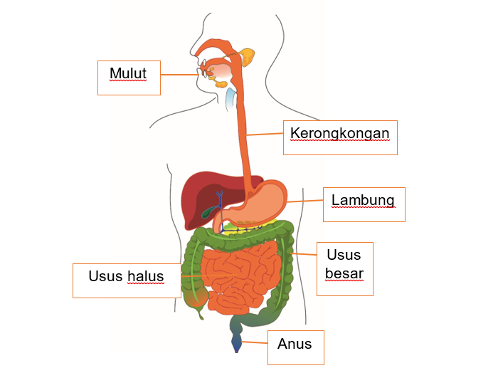

Sistem pencernaan manusia
Mengonsumsi makanan sehat sangat penting dalam menjaga kesehatan tubuh. Makanan yang telah dimakan akan diuraikan dalam sistem pencernaan menjadi sumber energi. Sistem pencernaan manusia dibagi menjadi 2 yaitu pencernaan mekanis dan pencernaan kimiawi.

Apa saja bagian dari sistem pencernaan manusia ?
Bagian-bagian sistem pencernaan manusia :
-
Mulut
Mulut berfungsi sebagai tempat makanan dihancurkan. -
Kerongkongan
Kerongkongan berfungsi sebagai saluran penghubung mulut dan lambung dan terjadinya gerak peristaltik -
Lambung
Lambung berfungsi sebagai tempat pencernaan makanan dengan bantuan enzim. -
Usus Halus
Usus halus berfungsi sebagai tempat penyerapan sari-sari makanan. -
Usus Besar
Usus besar berfungsi sebagai tempat penyerapan air sisa penyerapan usus halus dan membuang zat-zat sisanya. -
Anus
Anus berfungsi sebagai saluran pembuangan sisa pencernaan.
Proses Pencernaan Makanan Pada Manusia
- Ingesti, yaitu proses pemasukan makanan ke mulut.
- Mastikasi, yaitu proses pengunyahan makanan menggunakan gigi.
- Deglutisi, yaitu proses menelan makanan dikerongkongan.
- Digesti, yaitu proses pemecahan makanan dari zat yang kompleks menjadi yang lebih sederhana dengan bantuan enzim yang ada di lambung.
- Absorpsi, yaitu proses penyerapan sari-sari makanan yang terjadi di usus halus.
- Ingesti, yaitu proses pemasukan makanan ke mulut.
- Defekasi,yaitu proses pengeluaran sisa-sisa makanan yang sudah tidak diperlukan oleh tubuh melalui anus.